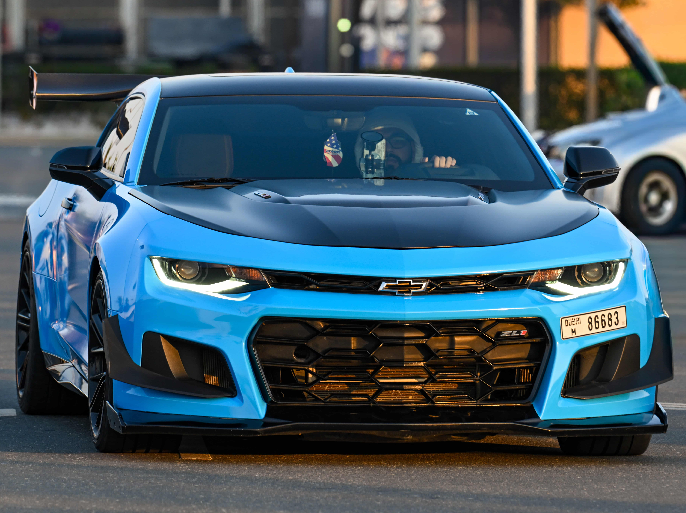
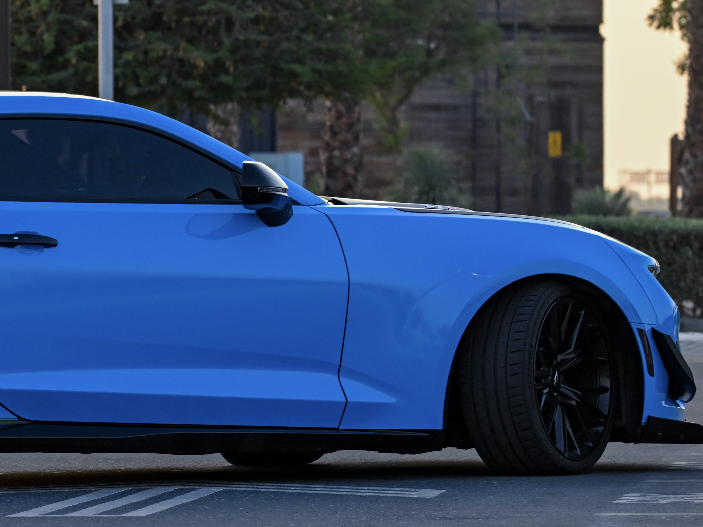
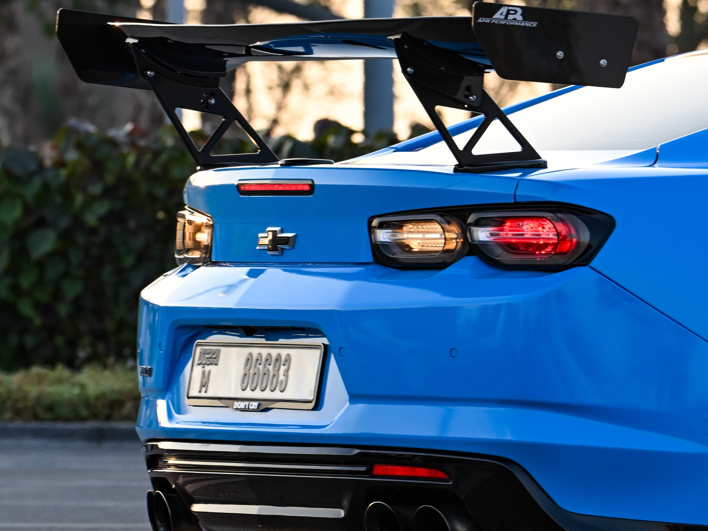
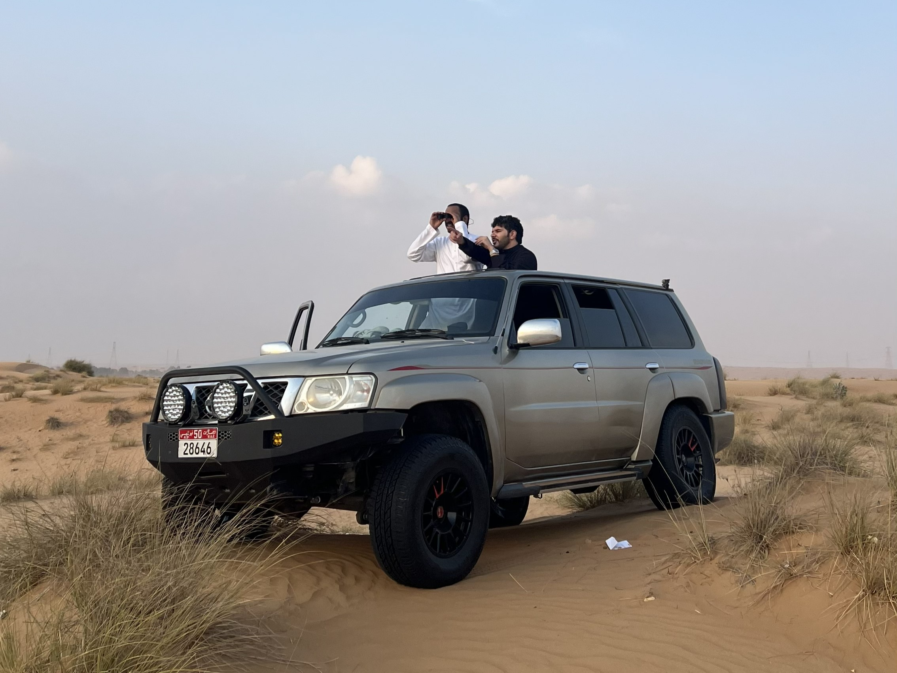
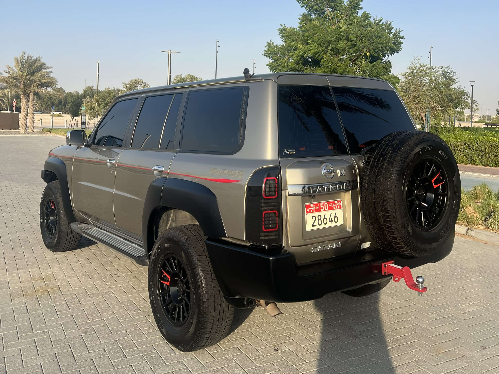
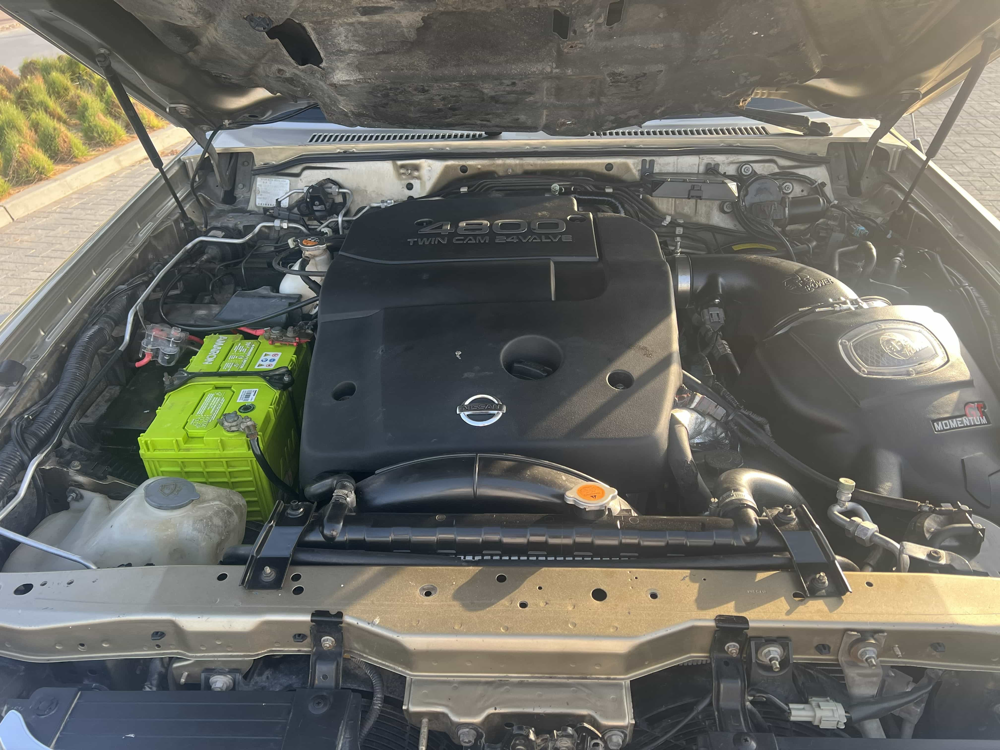

// 04 — BUILDS
The Builds
Cars are where I apply the same obsessive, systematic energy I bring to research. Every build has a concept, a codename, and a story. Here are mine.
CODENAME: SHADOW
[ ACTIVE BUILD ]
2020 Chevrolet Camaro ZL1

[ SHADOW // 2020 ZL1 ]
PLATFORM
2020 Chevrolet Camaro ZL1
ENGINE
6.2L Supercharged LT4
STOCK POWER
650 HP / 650 LB-FT
WRAP
Rapid Blue · Satin Black Hood & Roof
INSPIRATION
Rimuru Tempest — TenSura
AERO
APR GTC-300 Wing · 1LE Aero Kit
BUILD STAGE
[ IN PROGRESS ]
Performance Mods
- Full Bolt-Ons
- Pulley Upgrade
- Methanol Injection
- Custom Tune
- APR GTC-300 Wing
- 1LE Aero Kit
- Rapid Blue Wrap · Satin Black Hood & Roof · Carbon Fiber Accents
- Blower Porting
- Throttle Body Upgrade
- Camshaft Upgrade
- 18" Rears with Slicks
Complete
Planned

[ FRONT // 1LE KIT ]
[ SIDE PROFILE ]
[ REAR // APR WING ]Follow the build on TikTok → @ZL1ARES
CODENAME: MUSHIN
[ PROJECT CLOSED ]
2016 Nissan Patrol Y61 — Overlander
Mushin — 武神, god of war in Japanese. The vision was a gold and black Patrol reborn in white and black, built to go anywhere on earth. Lifted, armored, and equipped for cross-country expeditions and overland camping. The project reached 70% completion before circumstances forced a stop — sold, but not forgotten. A build this thorough leaves a mark. The next overlander will carry the lessons forward.

[ MUSHIN // Y61 PATROL OVERLANDER ]
PLATFORM
2016 Nissan Patrol Y61
CONCEPT
Expedition Overlander
COMPLETION
~70% at Close
PLANNED COLOR
White & Black
STATUS
Sold — Project Closed
What Was Built
- Profender 2.0 Shocks & H&R Springs
- H&R Spacers · Lenzo Venom Wheels
- AVM Free Wheeling Hub
- ToughDog Panhard Rods & Steering Stabilizer
- Heavy Duty Rotors, Ceramic Pads & Bushings
- American Racing Headers & AFE Air Intake
- Precision Double Plate Clutch
- Custom Steel Front Bumper (RKC)
- Stedi Pro Spotlights & BajaDesigns Squadron Pro Fogs
- 12-Switch AUX Control Board
- Water Tank & Side Lamps
Completed before close

[ FRONT ]
[ REAR ]
[ BAY ]